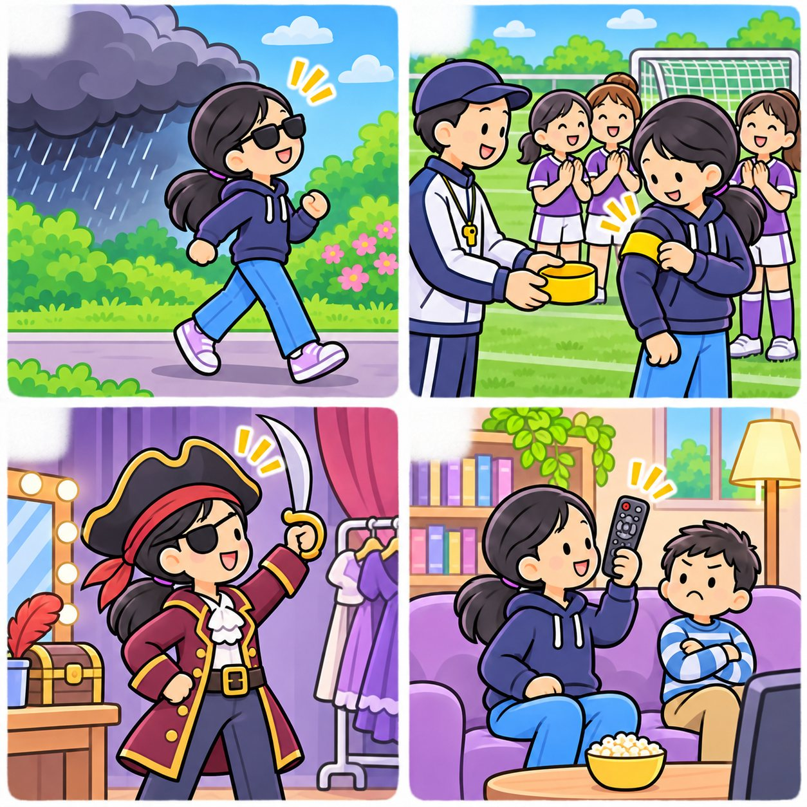
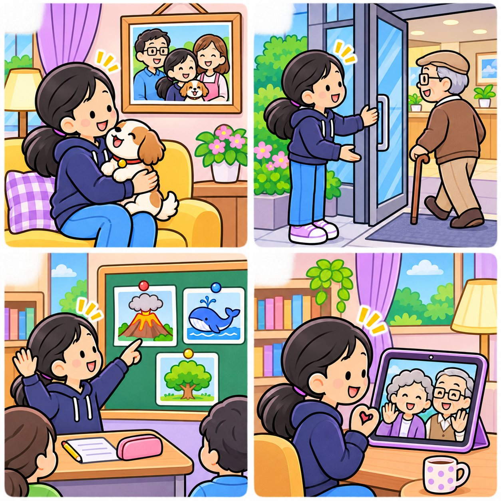

PART 1 · 생각과 판단오른쪽 쪽은 가리고 먼저 해 봐요.
A이 문장, 무슨 뜻?
수학여행 안내문 맨 끝에 이런 문장이 있었어요.
Mr. Kim will assume responsibility for the trip.
여기서 assume은 무슨 뜻?
선생님께 받은 이메일 맨 끝에 이렇게 적혀 있었어요.
Best regards, Mina
여기서 regard는 무슨 뜻?
B내가 아는 뜻흔히 외우는 뜻 말고 아는 뜻을 더 쓰고, 아래 단어는 뜻이 비슷하면 유 · 반대면 반
assume = 흔히 가정하다 +
assume과suppose()doubt()
regard = 흔히 간주하다 +
regard와consider()concerning()
C영어로 써 보기assume · regard 중 알맞은 단어를 넣어요 · 힌트는 문장 순서대로, 동사는 기본형
- 1나는 네가 그 소식을 이미 안다고 생각했어.I · that · you · already knew · the news
- 2많은 사람이 그를 영웅으로 여긴다.many people · him · a hero
- 3새 정부가 권력을 잡았다.the new government · power
- 4그 계획에 관해 질문이 있으면 저에게 물어보세요.if you have questions · the plan · ask me
④ 강의READING 뒤에 강의 → 이 쪽 채점(해설 p.2) · 틀린 문장 다시 쓰기 → MAKE IT MINE
강의 보기
assume집어 들어 내 것으로 받아들여요

1234확인하지 않은 말도, 남이 건넨 일도, 새로운 모습도 — 받아들이면 내 것이 돼요.In English assume = to take something on as your own
여러 가지 뜻굵은 단어 앞뒤를 보고 짐작해 써요
- 1
We assumed the shop was open.
우리는 그 가게가 문을 열었다고 .
- 2
She assumed the role of team captain.수능
그녀는 팀 주장 역할을 .
- 3
The story assumed a new form.수능
그 이야기는 새로운 형태를 .
- 4
The army assumed control of the city.
군대가 그 도시를 .
유의어 · 반의어
- 유의어supposeI suppose so.아마 그럴 거야.assume ①과 같은 자리 — 확실하지 않지만 그렇다고 봐요.
- 반의어doubtI doubt it.글쎄, 아닐걸.그대로 받아들이지 않고 의심해요 — assume ①과 반대.
유presume추정하다반question의문을 품다
regard눈길을 두고 바라봐요

1234같은 것도 어떤 눈길로 보느냐에 따라 생각이 달라져요.In English regard = to see something in a certain way
여러 가지 뜻
- 1
We regard our dog as family.
우리는 우리 개를 가족으로 .
- 2
He shows no regard for others.수능
그는 남을 전혀 하지 않는다.
- 3
I have a question with regard to the test.수능
시험에 질문이 하나 있어요.
- 4
Please send my regards to your family.수능
가족분들께 제 를 전해 주세요.
유의어 · 반의어
- 유의어considerI consider it a gift.그걸 선물로 본다.regard ①과 같은 자리 — regard A as B ≈ consider A (as) B.
- 유의어concerningnews concerning you네 소식regard ③ with regard to와 같은 자리 — 한 단어 전치사.
유view~로 보다반disregard무시하다
assume은 확인하기 전에 받아들이고, regard는 따져 보고 판단해요.
단어 · 예문 듣기
채점한 뒤 따라 읽어요
The Children on the List명단에 오른 아이들
NONFICTION 실제 연구 · 심리 · 교육
본문 듣기
따라 읽어요
1밑줄 친 assume · regard 뒤 □에 뜻 번호를 써요 6곳
2빈칸 (a) (b) (c)에 알맞은 한 단어를 쓰고, 근거가 된 말에 동그라미 해요.
assume①사실이라고 생각하다②맡다③띠다 · 갖게 되다④쥐다 · 장악하다regard①~로 여기다 · 보다②배려 · 고려 · 존중③with regard to ~에 관해④regards 안부
In 1964, the psychologist Robert Rosenthal and Lenore Jacobson started an unusual experiment at a school in South San Francisco. Every child took a test. The teachers were told that it was a new Harvard test that could predict which students would soon “bloom.” Then each teacher received a (a) of names. The teachers assumed that the list came from the test results. In fact, the names were chosen at random, without regard to the scores.
Eight months later, all the children were tested again. The children on the list had gained about 12 IQ points on average, while the others had gained about 8. The difference was largest among the (b) children: first graders on the list gained more than 27 points. With regard to reading, the results were similar.
How could a list make such a difference? Rosenthal believed that the teachers had come to regard these children as future stars. In their eyes, an ordinary child suddenly assumed new importance. They may have treated them more warmly and given them more attention.
Not everyone was convinced. The psychologist Robert Thorndike pointed out that some of the first scores were impossibly low, so the test itself may not have been (c). Later studies also found that the effect was much smaller, especially when teachers already knew their students well. Still, the study left a lasting message for anyone who assumes the role of a teacher or a parent: what we expect of others may shape what they become.
3처음 보는 뜻 도전핵심 그림으로 짐작해요
- 1Assuming the weather is good, we’ll go hiking.날씨가 우리는 등산을 갈 거야.
- 2In this regard, the two plans are the same. 두 계획은 같다.
4글 내용 확인맞으면 T, 다르면 F
- 1The teachers knew the names were random.T · F
- 2Children on the list gained more points.T · F
- 3Later studies found a stronger effect.T · F
1영어로 쓰기assume · regard 중 알맞은 단어로 · 힌트는 문장 순서대로, 동사는 기본형
- 1우리 반에서는 지민이가 회장 자리를 넘겨받았다.in our class · Jimin · the role of president
- 2그 작은 마을은 축제 기간에 완전히 새로운 모습이 된다.the small town · a whole new look · during the festival
- 3이 책은 그 분야의 고전으로 평가받는다.this book · a classic · in its field
- 4할머니께 잘 지내시냐고 전해 줘.give · my · to your grandma
2알맞은 단어 넣기여섯 단어를 한 번씩만 써요. 모양을 바꿔도 돼요.
assumeregardsupposedoubtconsiderconcerning
- 1She will the role of leader.
- 2Fans him as a hero.
- 3We are moving abroad.
- 4I whether it’s true.
- 5Any questions the schedule?
- 6I you’re tired.
3해석 쓰기굵은 단어가 이 문장에서 무슨 뜻인지 생각하며 우리말로 옮겨 써요
- 1We often assume that others think the same way we do.
- 2Over time, the hobby assumed great importance in his life.
- 3With regard to safety, the new car is excellent.
4영영 뜻으로 떠올리기p.10 단어 표는 가리고 써요
- an expert on the mindp _ _ _ _ _ _ _ _ _ _ _
- a scientific teste _ _ _ _ _ _ _ _ _
- to say what will happenp _ _ _ _ _ _
- to grow and do wellb _ _ _ _
- chosen by chancer _ _ _ _ _
- not specialo _ _ _ _ _ _ _
- feeling surec _ _ _ _ _ _ _ _
- continuing for a long timel _ _ _ _ _ _